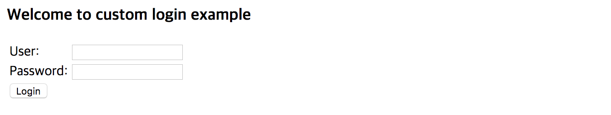

Nginx 설정
Nginx 디렉터리 구조
redhat 계열
HTML 파일
/usr/share/nginx/html
설정 파일
/etc/nginx/conf.d
debian 계열
HTML 파일
/var/www/html
설정 파일
/etc/nginx/sites-enabled
로그인 페이지 작성
login.html
login.html 파일을 다음과 같이 작성합니다.
이후, redhat 계열일 경우, /usr/share/nginx/html,
debian 계열일 경우, /var/www/html 디렉터리 아래에 위치시킵니다.
<html>
<head>
<title>Custom Login Page</title>
</head>
<body>
<h3>Welcome to custom login example</h3>
<div>
<form action="/login" method="post">
<table>
<tr><td>User:</td><td><input type="text" id="username" name="username"/></td></tr>
<tr><td>Password:</td><td><input type="password" id="password" name="password"/></td></tr>
<tr><td colspan='2'> <button type="submit" class="btn">Login</button></td></tr>
</table>
</form>
</div>
</body>
</html>
Nginx 설정
Nginx 기본 설명
사용자 정의 로그인 페이지 설정에 필요한 부분만 설명하였습니다.
root : html 파일을 참조할 경로 지정
ex) root /usr/share/nginx/html; -> /usr/share/nginx/html 아래 있는 html 파일을 참조하게 해줍니다.
location : 사용자가 접근하려는 경로에 대한 제어를 가능하게 해줍니다.
ex) location / {} -> root 경로로 접근할 경우 제어
proxy_pass : 내부적으로 처리할 URI로 연결해줍니다.
ex) proxy_pass http://localhost:8080; -> 어떤 URI로 접근 하더라도 localhost:8080 에서 처리가능하게 해줍니다.
root : html 파일을 참조할 경로 지정
ex) root /usr/share/nginx/html; -> /usr/share/nginx/html 아래 있는 html 파일을 참조하게 해줍니다.
try_files : root 경로 아래서 참조할 파일을 찾아줍니다.
ex) location /test {
try_files $uri /login.html; -> /test로 접근할 경우 login.html 페이지를 보여줍니다.
}
default customization
Nginx 설정은 다음과 같습니다.
redhat 계열은 /etc/nginx/conf.d 아래의 default.conf 파일을 수정해야 하며,
debian 계열은 /etc/nginx/sites-enabled 아래의 default 파일을 수정하면 됩니다.
#은 주석을 의미하므로 OS에 맞게 설정하면 됩니다.
server {
listen 80 default_server;
listen [::]:80 default_server;
# redhat 계열
# root /usr/share/nginx/html;
# debian 계열
# root /var/www/html;
server_name _;
location / {
proxy_set_header X-Forwarded-For $remote_addr;
proxy_set_header Host $http_host;
proxy_pass "http://127.0.0.1:8080";
}
location /login {
if ( $request_method = POST ) {
proxy_pass http://localhost:8080;
}
try_files $uri /login.html;
}
location ~* \.(css|jpg|jpeg|png|js)$ {
# redhat 계열
# root /usr/share/nginx/html/public;
# debian 계열
# root /var/www/html/public;
break;
}
}
Coinstack SignOn과 같은 서버에 구동하였고 default 포트가 8080이기 때문에 proxy_pass를 http://localhost:8080** **으로 설정해 주었습니다.
Login 경로는 2가지의 처리를 담당합니다.
- Login 페이지를 표현 (Request method GET 방식)
- Login 페이지로부터 전달받는 데이터를 처리(Request method POST 방식)
두가지 처리를 구분하기 위해 if 문으로 request_method 값을 체크하였습니다.
※ Nginx 설정 변경 후 반드시 Nginx를 재시작해야 변경 결과가 적용되며, 관련 명령어는 환경 구성을 참조하시기 바랍니다.
